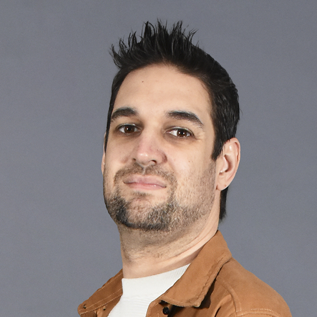

Engineering Manager
Christian Fuertes — 10+ years growing from developer to Engineering Manager. Currently leading multiple teams at Qualifyze, a B2B scale-up in Barcelona. Christian Fuertes — Más de 10 años creciendo de developer a Engineering Manager. Actualmente liderando múltiples equipos en Qualifyze, una scale-up B2B en Barcelona. Christian Fuertes — Més de 10 anys creixent de developer a Engineering Manager. Actualment liderant múltiples equips a Qualifyze, una scale-up B2B a Barcelona.
My pathMi caminoEl meu camí
I'm an Engineering Manager who grew from the code. I spent over a decade writing software, leading projects and shipping products before moving into full-time management.
I made that switch because I realized the biggest impact doesn't come from the code I write — it comes from the environment I create for others to do their best work.
Today I manage multiple teams, own hiring and budget, and report directly to the VP Engineering. But my day-to-day is really about three things: making sure people grow, making sure we ship what matters, and making sure technology serves the business — not the other way around.
Soy un Engineering Manager que creció desde el código. Pasé más de una década escribiendo software, liderando proyectos y entregando productos antes de pasar a gestión a tiempo completo.
Hice ese cambio porque me di cuenta de que el mayor impacto no viene del código que escribo — viene del entorno que creo para que otros hagan su mejor trabajo.
Hoy gestiono múltiples equipos, soy responsable de hiring y presupuesto, y reporto directamente al VP Engineering. Pero mi día a día gira en torno a tres cosas: que las personas crezcan, que entreguemos lo que importa, y que la tecnología sirva al negocio — no al revés.
Sóc un Engineering Manager que va créixer des del codi. Vaig passar més d'una dècada escrivint software, liderant projectes i lliurant productes abans de passar a gestió a temps complet.
Vaig fer aquest canvi perquè em vaig adonar que el major impacte no ve del codi que escric — ve de l'entorn que creo perquè els altres facin la seva millor feina.
Avui gestiono múltiples equips, sóc responsable de hiring i pressupost, i reporto directament al VP Engineering. Però el meu dia a dia gira al voltant de tres coses: que les persones creixin, que lliurem el que importa, i que la tecnologia serveixi al negoci — no a l'inrevés.
What I believeEn qué creoEn què crec
People firstPersonas primeroPersones primer
Great products are built by great teams. I invest in 1:1s, career plans and honest feedback because that's where real performance comes from.Los grandes productos los construyen grandes equipos. Invierto en 1:1s, planes de carrera y feedback honesto porque de ahí viene el rendimiento real.Els grans productes els construeixen grans equips. Inverteixo en 1:1s, plans de carrera i feedback honest perquè d'aquí ve el rendiment real.
Outcome over outputResultado sobre actividadResultat sobre activitat
Shipping fast matters, but shipping the right thing matters more. I push for clarity on what success looks like before we write a single line.Entregar rápido importa, pero entregar lo correcto importa más. Busco claridad sobre qué es éxito antes de escribir una sola línea.Lliurar ràpid importa, però lliurar el correcte importa més. Busco claredat sobre què és èxit abans d'escriure una sola línia.
Tech with purposeTecnología con propósitoTecnologia amb propòsit
Technology should serve business goals. I keep technical judgment sharp enough to guide architecture decisions without becoming a bottleneck.La tecnología debe servir al negocio. Mantengo criterio técnico para guiar decisiones de arquitectura sin convertirme en cuello de botella.La tecnologia ha de servir al negoci. Mantinc criteri tècnic per guiar decisions d'arquitectura sense convertir-me en coll d'ampolla.
By the numbersEn cifrasEn xifres
10+
Years in techAños en techAnys en tech
7–10
People managedPersonas gestionadasPersones gestionades
6
Companies shapedEmpresas impactadasEmpreses impactades
4
Languages spokenIdiomas habladosIdiomes parlats
ExperienceExperienciaExperiència
2024 – present
Multiple teams, 7–10 people. Hiring, budget, engineering standards. Reporting to VP Engineering. Architected the Supplier & Market Intelligence system.Múltiples equipos, 7–10 personas. Hiring, presupuesto, estándares de ingeniería. Reporte al VP Engineering. Diseñé el sistema de Supplier & Market Intelligence.Múltiples equips, 7–10 persones. Hiring, pressupost, estàndards d'enginyeria. Report al VP Engineering. Vaig dissenyar el sistema de Supplier & Market Intelligence.
2023 – 2024
Full-stack development (TypeScript, NestJS, React). Technical mentoring and code review.Desarrollo full stack (TypeScript, NestJS, React). Mentoring técnico y code review.Desenvolupament full stack (TypeScript, NestJS, React). Mentoring tècnic i code review.
2021 – 2023
Technical lead for Alexa, Google Home and SmartThings integrations. Defined roadmap and OKRs. C-level stakeholder demos.Liderazgo técnico de integraciones con Alexa, Google Home y SmartThings. Roadmap, OKRs y demos a C-level.Lideratge tècnic d'integracions amb Alexa, Google Home i SmartThings. Roadmap, OKRs i demos a C-level.
2018 – 2020
Led development of pEp for Thunderbird (email encryption). Architecture, TDD and team management.Lideré el desarrollo de pEp for Thunderbird (cifrado de email). Arquitectura, TDD y gestión de equipo.Vaig liderar el desenvolupament de pEp for Thunderbird (xifrat de correu). Arquitectura, TDD i gestió d'equip.
2014 – 2018
Data ingestion and ML projects. Architecture design, junior mentoring and hiring.Proyectos de data ingestion y ML. Arquitectura, mentoring de juniors y hiring.Projectes de data ingestion i ML. Arquitectura, mentoring de juniors i hiring.
2013 – 2014
Head of Technology for a B2B fashion marketplace. Led technical and design team.Head of Technology en marketplace B2B de moda. Lideré equipo técnico y de diseño.Head of Technology en marketplace B2B de moda. Vaig liderar equip tècnic i de disseny.
Featured workProyectos destacadosProjectes destacats
Qualifyze
Supplier & Market Intelligence
Scalable architecture handling large volumes of supplier data for the pharmaceutical industry. Designed from scratch to support business growth.Arquitectura escalable para grandes volúmenes de datos de proveedores farmacéuticos. Diseñada desde cero para soportar el crecimiento del negocio.Arquitectura escalable per a grans volums de dades de proveïdors farmacèutics. Dissenyada des de zero per suportar el creixement del negoci.
Wallbox Chargers
Voice & Smart Home
Full integration suite for Alexa, Google Home and Samsung SmartThings. Defined UX flows, monitored adoption metrics and iterated based on user analytics.Suite completa de integración con Alexa, Google Home y Samsung SmartThings. Definición de flujos UX, métricas de adopción e iteración basada en analíticas.Suite completa d'integració amb Alexa, Google Home i Samsung SmartThings. Definició de fluxos UX, mètriques d'adopció i iteració basada en analítiques.
Tech DNAADN técnicoADN tècnic
Leadership
Backend & infra
Frontend
ArchitectureArquitecturaArquitectura
Let's talkHablemosParlem
Always happy to chat about engineering leadership, team building, or new opportunities. Drop me a line.Siempre encantado de hablar sobre liderazgo de ingeniería, construcción de equipos o nuevas oportunidades.Sempre content de parlar sobre lideratge d'enginyeria, construcció d'equips o noves oportunitats.